MM32 FlexCAN介绍¶
概述¶
FlexCAN 模块是一个通信控制器，遵循 ISO 11898-1 标准、 CAN FD 和 CAN 2.0B 协议规范。 CAN 协议主要被设计用作车载串行总线，在以下方面满足规范要求：
- 实时处理
- 车辆在电磁干扰环境下的可靠操作
- 成本效益
- 带宽要求
该模块支持标准和扩展帧，支持最大 64 字节有效负载，传输速率高达 8Mbps，并且具有非常灵活的用于传输和接收的邮箱系统。邮箱系统由 32 个报文缓冲区（MB）组成。报文缓冲区用于存储配置、控制数据、时间戳、报文 ID 以及数据。和 MB 相对应的内存空间可以通过配置支持传统型 FIFO 接收机制，该机制能够结合 ID 过滤表（高达 104 个扩展 ID 或 208 个标准 ID 或 416 个 8 位 ID）检测接收帧，并为高达 32 个 ID 表元素提供了私有掩码寄存器。
FlexCAN 支持 FIFO（经典 CAN 帧使用传统型 Rx FIFO； CAN FD 帧使用增强型 Rx FIFO）和邮箱同时接收。对于邮箱接收，通过匹配算法可以将接收到的帧只存储到具有相同 ID 的 MB 中。掩码机制能够将 MB 中设置的 ID 与一系列接收帧的 ID 进行匹配。传输时，仲裁算法基于报文的 ID（提供本地优先级可选）或 MB 的编号来决定待传输 MB 的优先级。
主要特征¶
- 完全支持 CAN FD 和 CAN 2.0B 协议：
- 标准帧
- 扩展帧
- 0 ~ 64 字节数据长度
- 可编程比特率，最高 8Mbps
- 基于内容的寻址方式
- 符合 ISO 11898-1 标准
- 每个邮箱都可配置为接收或发送，均支持标准和扩展报文
- 每个邮箱都有私有接收掩码寄存器
- 全功能的传统型和增强型 Rx FIFO，存储容量各多达 6 帧，自动进行内部指针处理且支持 DMA
- 传输中止功能
- 支持只听模式
- 可编程的回环模式，支持自测试
- 可编程的传输优先级机制：最低 ID、最小邮箱编号或最高优先级
- 基于 16 位自由运行计时器的时间戳机制
- 全局网络时间（由特定的报文进行同步）
- 中断掩码
- 高优先级仲裁机制，延迟时间短
- 远程帧可以由软件处理或自动处理
- Tx 邮箱状态（最低优先级缓冲区或空缓冲区）
- ID 接收过滤命中指示（IDHIT）寄存器
- 发送报文的 CRC 状态
- 传统型 Rx FIFO 全局掩码寄存器
- 匹配过程中邮箱或 Rx FIFO 优先级可选
- 高效的 Rx FIFO ID 过滤功能，传统型 Rx FIFO 支持 104 个 ID 过滤表元素；增强型 Rx FIFO 支持 2 个 ID 过滤元素
- PE 时钟源可编程为外设时钟或振荡器时钟
- 收发器延迟补偿（TDC）功能
功能框图¶
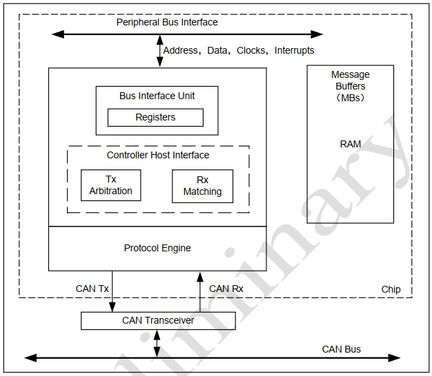
- 协议引擎（PE）子模块管理 CAN 总线上的串行通信：
- 请求存取 RAM 接收和传输帧
- 验收接收到的报文
- 进行错误处理
- 检测 CAN FD 报文
- 控制器主机接口（CHI）子模块负责选择接收和传输的报文缓冲区，以及对报文的仲裁和 ID 匹配算法。
- 总线接口单元（BIU）子模块控制内部接口总线的访问，建立与 CPU 和其他模块的连接。时钟、地址和数据总线、中断输出、 DMA 都通过 BIU 进行访问。
报文缓冲区结构¶
FlexCAN 模块使用时报文缓冲区（Message Buffer，MB）结构如下图所示：
FlexCAN 外设地址空间的 0x0080 – 0x027F之间的地址，被映射到RAM中，用于存放MB的数据结构，每个MB占用连续的16个字节，总共32个MB。 这些MB将用于存放即将向CAN总线发送的帧数据内容，软件需要先把数据填充到MB中再启动发送工程；或者从CAN总线上捕获的CAN数据内容，之后软件就可以从MB中读到接收帧的信息。
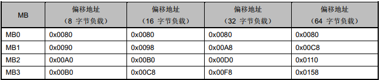
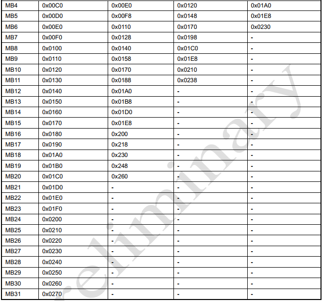
FlexCAN 所使用的报文缓冲区结构，包括 CAN 2.0B 的两种帧格式：扩展帧（29 位 ID）和标准帧（11 位 ID）。每个报文缓冲区（MB）由 16、 24、 40 或 72 字节组成，其中包括 8、 16、 32 或 64 字节的数据。
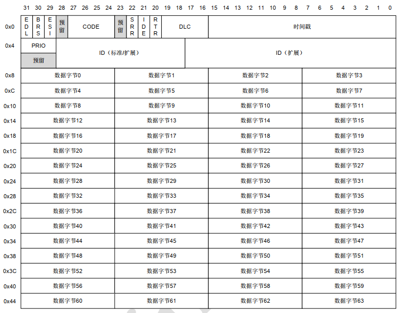
EDL 扩展数据长度：
该位用于区分CAN格式帧和CAN FD格式帧。对于配置为RANSWER的代码字段1010b的消息缓冲区，不能设置EDL位。
BRS 位速率选择位：
该位定义了是否在CAN FD格式帧内切换码率。
ESI 错误状态指示：
该位表示发送节点是错误主动还是错误被动。
CODE (Message Buffer Code)报文缓冲区码：
CPU和FlexCAN外设都可能向这个字段写命令。当CPU向CODE字段中写数，用于向FlexCAN外设配置发送和接收的过程；当FlexCAN外设向CODE字段中写数，用于告知CPU当前发送或接收过程已经完成或者正在进行的状态。关于具体的各种命令以及对应的操作和状态，可进一步参见芯片手册中的说明。这里给出一个总结表格。
当用作接收邮箱时CODE 的值与邮箱状态对应关系如下：
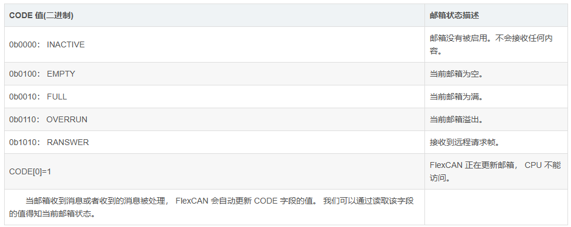
当邮箱用作发送邮箱时 CODE 的值与邮箱状态对应关系如下所示：
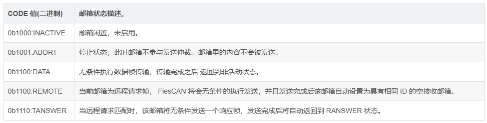
SRR (Substitute Remote Request)：
仅用于扩展帧。当表示扩展帧时，必须置1。
远程发送请求替代位。当固定隐性位时，SRR 只能用于扩展帧格式，该位必须由用户将其设置为1来传输，并且和从 CAN 总线上接收到的值一起被存储起来。它可以以隐性位或显性位的形式接收，如果 FlexCAN 以显性位接收，那么认为它是仲裁丢失。当 SRR=1 时，采用隐性位，强制用来以扩展帧模式传输；当 SRR=0 时，采用显性位，对于传输扩展模式是不可用的。
IDE (ID Extended Bit) ID扩展位：
标记是否为扩展帧，1表示扩展帧，0表示标准帧。
该位用来表示是标准帧还是扩展帧。当 IDE=1 时，为扩展帧；当 IDE=0 时，为标准帧。
RTR (Remote Transmission Request) 远程发送请求位：
该位影响远程帧的行为，是接收过滤器的一部分。如果 FlexCAN 传输1或者0，认为它是仲裁丢失。如果该位以0（显性）传输，在接收时为1（隐性），那么 FlexCAN 模块将会认为这是个错误。如果接收到的值与发送值相同，则认为是一次成功的传输。当 RTR=1 时，如果 MB 为发送 MB，那么表示当前的 MB 可能有一个等待发送的远程请求帧；如果 MB 为接收 MB，那么接收到的远程请求帧将会被存储起来；当 RTR=0 时，表示当前的 MB 有一个数据帧等待传输，在接收 MB 中，它可能会被当成匹配过程。
设定或表示当前MB中是否为远程请求帧，1表示远程帧，0表示数据帧。
DLC (Length of Data in Bytes) 数据的字节长度：
发送和接收帧中的数据长度，0表示没有。有效值为1到8。当接收通信帧时，FlexCAN协议引擎会从接收到的帧中提取有效数据填充到数据字段，并复制接收帧的DLC值到MB的DLC字段中。当发送通信帧时，在总线上发送通信帧的字节流时，若DLC小于8，则实际数据负载的字节流长度亦会对应缩短，而不会填充空位。当RTR=1，即发送远程帧时，此时发送数据字段中无有效内容，将会忽略DLC中的值（等价于DLC=0）。
该字段为发送或接收数据的长度。在接收阶段，该字段由 FLexCAN 模块写入，是从接收帧的 DLC（Data Length Code） 字段复制而得到的。在传输阶段，该字段由 MCU 写入，并且会传输与 DLC 值相同的帧长度。当 RTR=1 时，被传输的帧为远程帧且不包括数据字段，不考虑 DLC 字段。下表说明了 DLC 与可用数据字节的对应关系。
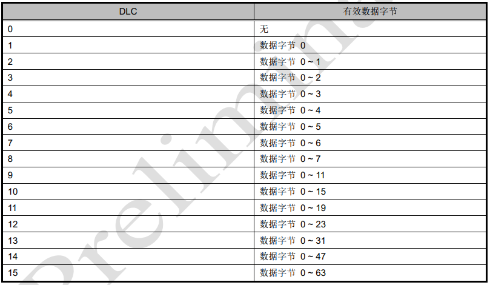
TIMESTAMP (Free-Running Counter Time Stamp) 时间戳位：
接收帧时本机填入时间戳，用于本机处理多个MB中的接收帧时判断先后时序。这个字段将由FlexCAN的协议引擎自动填充，从CAN_TIMER寄存器中复制过来。
为自由运行计数器时间戳。这16位是自由运行计数器的备份，用于在当标识符字段的开始出现在 CAN 总线时捕捉传输或者接收帧。
PRIO (Local Priority) 本地优先级：
对本机多个MB的发送帧执行仲裁（而不是总线上的设备，CAN总线对设备没有优先级的概念），使用唯一的发送引擎按优先级逐个发送。这个字段的值不会被发送到CAN总线上，可以被附加到常规的ID后面，作为一个配置项，当CAN_MCR[LPRIO_EN]=1时生效，仅作用于发送过程中的多个MB之前进行排序。
该位只有当 CAN_MCR[LPRION_EN] 位置1时才有用，并且只对传输报文缓冲区有效。这些位不会被传输，他们经常被附加到 ID 来定义传输的优先级。
ID (Frame Identifier) 帧标识符：
在标准帧的格式中，只用到收发通信帧的高11位（28b – 18b），后续的低18位被忽略。当使用扩展帧时，整个29位的字段全部用于表示通信帧的ID。标准帧和扩展帧的区别就在于ID字段的位数，扩展帧使用更多位的ID，可以在总线系统中表示更多的通信帧类型。
在标准帧格式中，只有11位，高位比特（28到18）用来标识接收或者发送的帧，低18位将会被忽略；在扩展帧格式内，所有的位都用来标识传输或者接收的数据帧。
DATA Byte 0-7(Data Field) 数据字段：
通信帧的有效数据负载。最多8字节，同DLC字段描述的数据字节数对应。当为发送帧时，由CPU写入数据到本字段，供FlexCAN引擎发送到总线上；当为接收帧时，FlexCAN的协议引擎会在总线上捕获到数据帧后，自动复制值到本字段，供CPU读取。
最多64字节可用于数据帧。对于接收到的数据帧，以被接收时的格式进行存放。DATA BYTEn 只有当 n 小于 DLC 的值时才有效。对于传输数据帧，该字段用来表示发送的数据帧的长度。
CAN总线与MB对映关系¶
CAN总线标准帧同MB消息缓冲区的对映关系如下图所示：
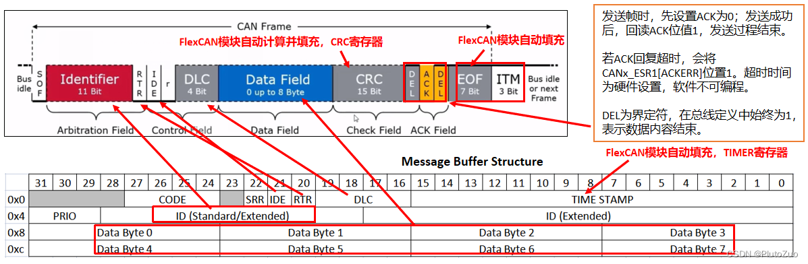
CAN总线扩展帧同MB消息缓冲区的对映关系，相对于标准帧，多了SRR的字段，但仍同MB消息缓冲区有一一对映的关系，如下图所示：
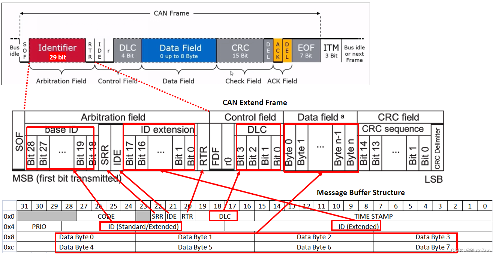
传统型 Rx FIFO¶
相对于默认的将每个MB作为一个单独的通道，一帧一帧地接收并处理数据，FIFO模式可以将几个MB的存储空间组织成一个FIFO，FIFO可以缓存更多的帧，在CPU提供同等算力的情况下，提升节点设备的处理CAN总线通信帧的动态吞吐率。
当配置CAN_MCR[RFEN]=1时，启用Rx FIFO模式，此时，原MB列表的部分MB存储区域（MB0 – MB5，模块内偏移地址为0x80 – 0xDC的内存区域）将合并成Rx FIFO，由FIFO引擎管理。其中，原MB0的作为CPU访问Rx FIFO的接口，CPU始终可以从原MB0的位置读到最早进入FIFO的帧信息。此时，Rx FIFO的区域为只读模式，复位缺省值为0x00。
一个额外的内存空间，从 0xE0 开始，可扩展至 0x27C（通常被 MB6 ~ 31 占用），取决于CAN_CTRL2.RFFN 的设置，包括 ID 过滤表（可配置 8 ~ 104 个表元素），该表指定了传统型 Rx FIFO 接收帧的过滤条件。
复位时，可变的 ID 过滤表内存空间默认为 0xE0，仅可扩展至 0xFC，对应于 RFFN = 0 时的 MB6-7。
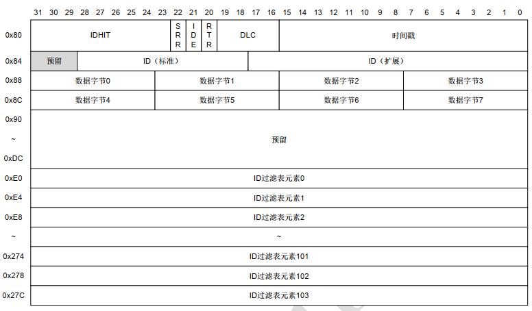
其中，每个ID过滤器表项（ID Filter Table element）占用32位字的空间，可以被分成1个32位、2个16位或4个8位的匹配接收掩码（IDAF，Identifier Acceptance Filters），这需要在CAN_MCR[IDAM]寄存器中设置。下图展示了这种可能使用多种格式分割ID过滤器表项的格式，但要特别注意，一旦选定一种格式，所有的ID过滤器表项都会使用同一种格式。
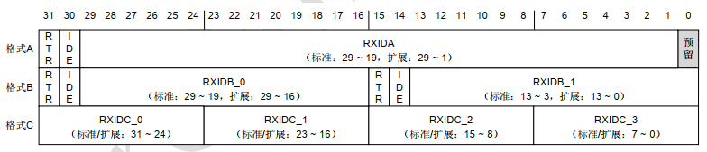
其中，各配置字段的含义如下：
RTR (Remote Frame)：
指定能否捕获匹配ID的远程帧。1指定可以捕获，0指定不捕获。
IDE (Extended Frame)：
指定能否捕获匹配ID的扩展帧。1指定可以捕获，0指定不捕获扩展帧，仅捕获标准帧。
RXIDA/B/C (Rx Frame Identifier with Format A/B/C)：
指定匹配的ID模式，当不满足完整的帧ID时，仅匹配帧的高位。
FIFO中MB结构中多出来的IDHIT (Identifier Acceptance Filter Hit Indicator)：
表示当前的MB匹配到了哪个ID过滤器。
增强型 Rx FIFO¶
增强型 Rx FIFO 通过置位 CAN_ERFCR.ERFEN 使能。 0x2000 ~ 0x204C 包含了增强型 Rx FIFO 的输出，作为报文缓冲区被 CPU 读取。此输出包含已接收但尚未读取的最旧的报文。下图显示了增强型 Rx FIFO 的数据结构。
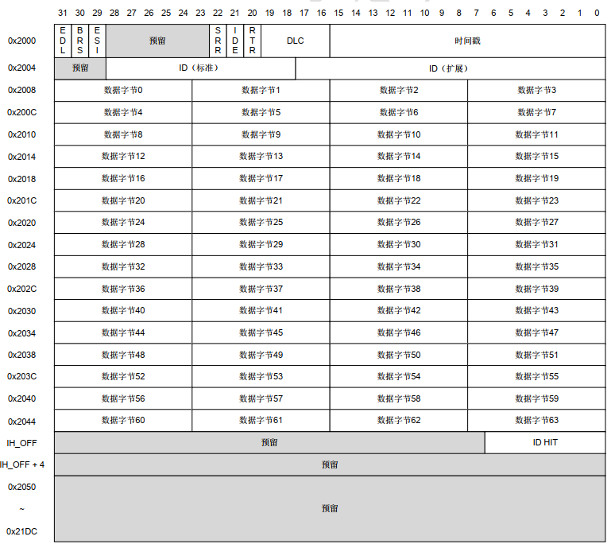
注： ID HIT 偏移地址随 DLC 动态改变，如下表所示。
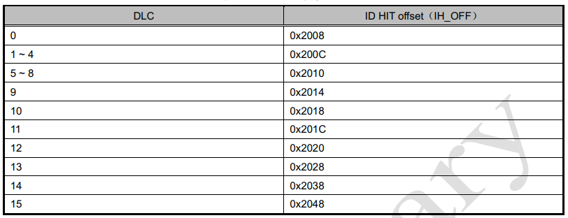
过滤机制¶
FlexCAN提供了强大的过滤机制来对总线上的报文进行过滤，只有通过过滤的报文才能成功的被接收。过滤机制的原理就是通过设置过滤器的ID（29bit），RTR（1bit），IDE（1bit），通过这三个特征来进行过滤，这3个特征加在一起31bit。而这个过滤机制也是得分成几种情况：
标准x邮箱的过滤器¶
这种情况下，过滤器就是每个接收邮箱MB的中的ID,RTR,IDE，之后又根据Individual MASK有无激活分成两种情况。
- 未激活状态下，那么除了14号，15号邮箱之外有自己的个人MASK，其余的接收邮箱则共用一个Global MASK。
- 激活状态下，所有的接收邮箱都会有自己的Individual MASK。
传统型 RX FIFO的过滤器¶
Legacy RX FIFO的过滤器其实就是上面所说的ID过滤器表项，每一个ID过滤器表项占32bits，它根据配置会有A,B,C三种形式，这三种形式不能共存。
A形式就是一个完整的RTR+IDE+Standard ID，B形式就是两个完整的RTR+IDE+Standard ID或者一个完整的RTR+IDE+extended ID，而C形式就是4个ID片。那么它的MASK在哪里呢，这里比较特殊，如下图所示：
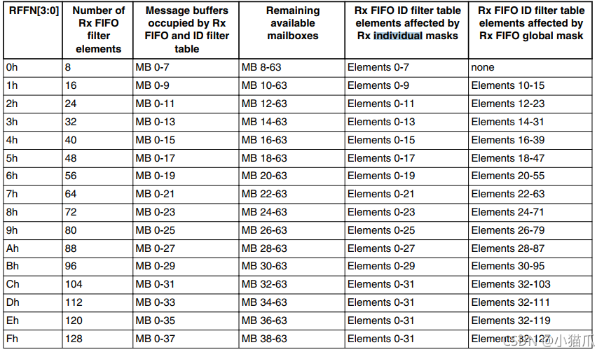
可以看到在这种情况下，每个Filter表元素的MASK是变化的，举个例子，如果我们设置了128个Filter表元素，那么前32个Filter表元素有自己的Individual MASK，其余的Filter表元素则共用一个Global MASK。
增强型 RX FIFO的过滤器¶
Enhanced RX FIFO的过滤器则通过ERFFELn寄存器来实现的，总共有128个ERFFELn寄存器，而这128个寄存器则可以配置成两种类型，分别为Standard ID类型和Extended ID类型，这两种类型可以同时存在，两种类型又都有三种模式。
Standard ID类型中，每个过滤器占用32bit，即占用一个ERFFELn寄存器，三种模式分别如下：
①传统Filter+MASK组合
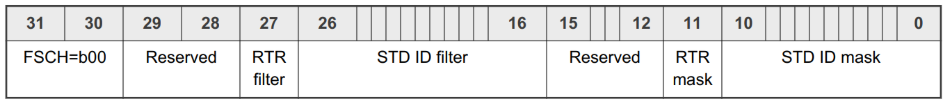
需满足条件：
- CAN message is base frame format (IDE = 0)
- (ID[n] = STD ID filter [n]) or (STD ID Mask[n] =0)
- (RTR = RTR Filter) or (RTR MASK = 0)
②一个ID Fliter范围
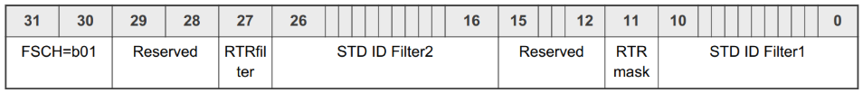
需满足条件：
- CAN message is base frame format (IDE = 0)
- (ID ≥ STD ID Filter1) & ( ID ≤ STD ID Filter2)
- (RTR = RTR filter) or (RTR MASK = 0)
③两个固定的ID Fliter
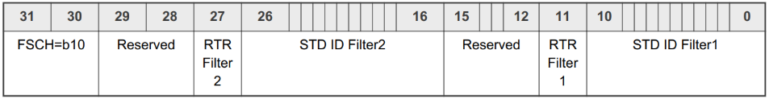
需满足条件：
- CAN message is base frame format (IDE = 0)
- (ID[n] = STD ID Filter1[n]) or (ID[n] = STD ID Filter2[n])
- (RTR = RTR Filter1) or (RTR = RTR Filter2)
至于Extended ID区域则是相同的，唯一的不同就是每个过滤器会占用64bit，即占用两个ERFFELn寄存器，这里就不多做介绍了。
匹配机制¶
前面介绍了FlexCAN强大的过滤机制，那么我们再来看看在这个强大过滤机制下的匹配机制。
匹配的基本过程就是根据MB的序号，从小到大一个一个匹配，直到匹配成功，并将数据移入MB。这里举几个现象，就非常清楚了。
- 如果2个邮箱有相同的Filter配置且都是空邮箱，那么小序号邮箱匹配成功。
- 如果2个邮箱有相同的Filter配置且其中一个为空邮箱一个为满邮箱，则空邮箱匹配成功。
- 如果4个邮箱（MB0,MB1,MB2,MB3）有相同的Filter配置且都不为空，那么如果新的消息来了则会覆盖MB0或者MB3，即覆盖第一个或者最后一个(可设置)。
- 如果同时使能了RX_FIFO和接收型标准x邮箱，则可以通过设置来决定先匹配FIFO还是先匹配接收型标准x邮箱。
- 在非FIFO情况下，可以将多个接收型标准x邮箱的Filter设置相同，来实现一个接收队列，在很短时间内接收多个报文。